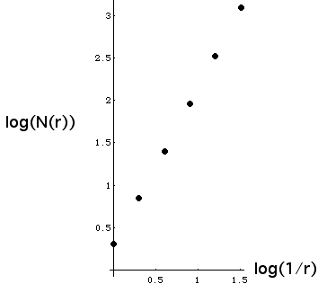

| 8. Here is the table of values, followed by the log-log plot. |
| r = square side length | N(r) = number of squares | Log(1/r) |
Log(N(r)) |
| 1 | 1 + 1 = 2 | 0 | 0.301 |
| 1/2 | 4 + 3 = 7 | 0.301 | 0.845 |
| 1/4 | 42 + 32 = 25 | 0.602 | 1.398 |
| 1/8 | 43 + 33 = 91 | 0.903 | 1.959 |
| 1/16 | 44 + 34 = 337 | 1.204 | 2.528 |
| 1/32 | 45 + 35 = 1267 | 1.505 | 3.103 |
|
|  |
| Linear regression on all six points gives a slope of 1.862; regression on the last three gives a slope of
1.900. Computing the slope using just the last two numbers gives 1.910. |
| |
| We see covering the shape with boxes of side length rn = 1/2n requires
N(rn) = 4n + 3n boxes. |
| The box-counting dimension is |
| db | = limn → ∞ Log(N(rn))/Log(1/rn) |
| = limn → ∞Log(4n + 3n)/Log(2n) |
| = limn → ∞ Log(4n(1 + (3/4)n)))/Log(2n) |
| = limn → ∞ (Log(4n) + Log(1 + (3/4)n))))/Log(2n) |
| = limn → ∞ Log(4n)/Log(2n) + Log(1 + (3/4)n)/Log(2n) |
| = limn → ∞ (nLog(4)/nLog(2) + Log(1 + (3/4)n)/nLog(2)) |
|
| The second term vanishes because 1 + (3/4)n → 1 and Log(1) = 0. Consequently, the
similarity dimension is 2. |
| The numerical results are some distance away from this because convergence to the limit can be very slow,
even in the case of mathematical examples. |